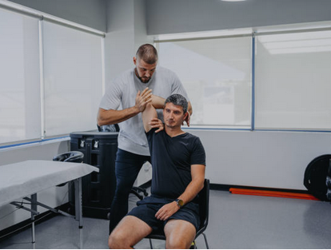
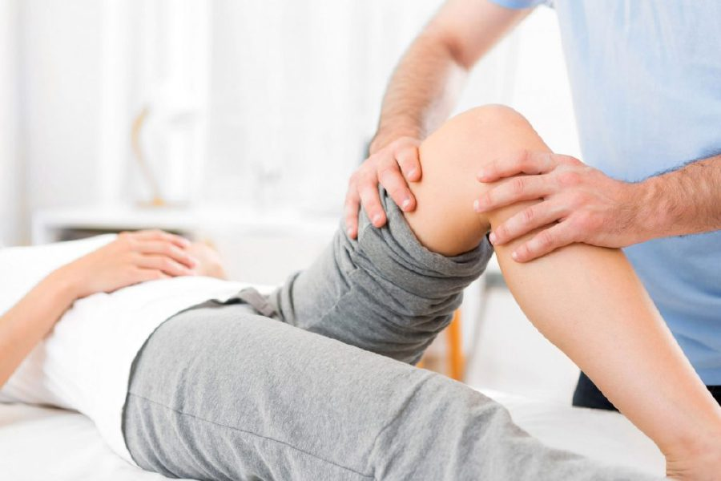
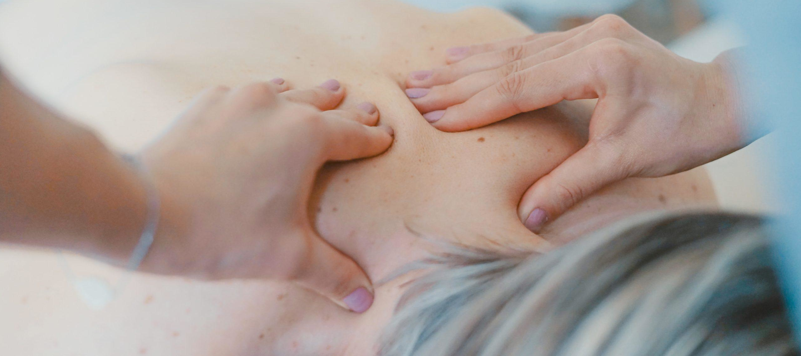

Back & Neck Pain
Back and neck pain is one of the most common and most treatable conditions we see. Whether you are dealing with a sudden injury, postural strain from desk work, a disc problem or long-standing pain, our physiotherapists take the time to identify the true cause.
Treatment combines manual therapy, targeted exercise, movement re-education and lifestyle guidance to resolve pain and prevent it from coming back.
Sports Injury Rehabilitation
Recovering well is what matters most after injury. Our physiotherapists understand sport, athletic movement and what it takes to return to full performance safely. We address the biomechanical factors behind the injury, not just the pain.
From acute muscle tears to chronic overuse injuries, we build a structured return-to-sport programme suited to your sport and level.


Shoulder & Upper Limb
The shoulder is a complex joint with many potential sources of pain. Our physiotherapists assess the rotator cuff, scapula, glenohumeral joint and cervical spine together, not in isolation, to find where the problem is actually originating.
Hip, Knee & Lower Limb
We assess the hip, knee, ankle and foot as an interconnected system, because dysfunction in one area frequently affects the others. Whether the problem is arthritis, a ligament injury or repetitive strain, we restore strength, stability and confidence.

Post-Operative Rehabilitation
Surgery is the beginning of recovery, not the end. A structured rehabilitation programme is what converts a technically successful operation into a full functional recovery. Our physiotherapists have extensive experience guiding patients through post-surgical rehab at the right pace.
Movement & Biomechanics
Not all physiotherapy is about injury. Our movement and biomechanics service is for those wanting to move more efficiently, reduce injury risk or optimise physical performance. We provide detailed movement analysis and targeted intervention to address patterns that limit you or predispose you to problems.
